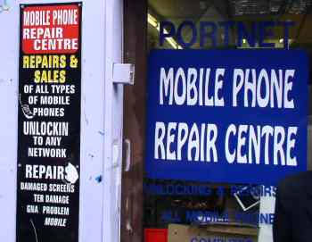

欧州でGSM携帯電話を使う
Using GSM Mobile Phone at Europe
Home > 旅日記と世界の写真 > 旅の情報 > このページ
注意 : このページは1995年〜2005年頃の状況を記述したもので、現在の状況とは大きく異なります。
基本的な情報
携帯電話の規格
2004年の時点では、日本で売られている携帯電話はGSMに対応しておらず、GSM方式が主流の海外ではほとんど使えませんでした。2010年現在、西欧でも3G（WCDMA方式）が都市部を中心に普及してきたため、日本の携帯電話を現地に持ち込んで使うことも日常的に出来るようになっています。
もちろん、3GとGSM双方対応したNTT DoCoMoやSoftbankの機種なら、3Gが普及していない地方部などでも問題なく使えるはずです。
| 規格 | 技術世代 | 普及している主な地域 |
|---|---|---|
| PDC | 2G | （過去）日本 |
| TDMA | 2G | （過去）日本・北米 |
| CDMA | 2G | （過去）日本・北米 |
| GSM | 2G | 世界各国（日本と韓国を除く） |
| WCDMA (UMTS) | 3G | 世界各国・日本(DoCoMo,Softbank) |
| CDMA2000 | 3G | 日本(KDDI) |
2004年の時点では、3Gを世界に先駆けて導入したNTT DoCoMoのFOMAはドラフト段階の規格を用いていたため、DoCoMoの端末機で規格制定後に施設を導入した諸外国のネットワークに接続した場合、相性問題で接続が不安定になったこともあったそうです。2010年現在、相性問題が発生しているとの話はそれほど聞こえてきません。（端末機・基地局双方で何らかの対応を取ったか...）
第3世代移動通信システムの現状について（ITU 日本語訳)（リンク切れ）
GSM
GSM方式の端末機は、一部の高価な機種を除いて、全ての周波数に対応できるわけではありません。国別・電話会社別の詳細情報はGSM WORLDで調べられます。
| 規格 | 周波数帯 | 主な地域 |
|---|---|---|
| GSM450 | 450MHz | 一部の地域 |
| GSM480 | 480MHz | 一部の地域 |
| GSM850 | 850MHz | 一部の地域 |
| GSM900 | 900MHz | 世界中（北米除く） |
| GSM1800 | 1800MHz | 世界中の主要都市（北米除く） |
| GSM1900 | 1900MHz | 北米 |
現在、欧州の携帯電話ショップの店頭に並んでいる機種の周波数対応は次のようなものが多いようです。
欧州用のDualBand (デュアル・バンド) → GSM900/GSM1800 の２つの周波数帯が利用可能
北米用のDualBand (デュアル・バンド) → GSM900/GSM1900 の２つの周波数帯が利用可能
TriBand (トライ・バンド) → GSM900 / GSM1800 / GSM1900 の３つの規格が利用可能
SIM カード（SIM Card）
GSM携帯電話は、SIM Card（シム・カード）を挿入して初めて機能します。
SIM Cardは携帯電話キャリア（会社）毎に発行されていて、「電話番号」や「メールアドレス」はこのSIM Cardに対して割り当てられています。
携帯電話機は単なる器なので、SIM
Cardを差し替えることで全く別の電話番号を持つ携帯電話として機能させることが出来ます。（キャリア側からは携帯電話固有のIMEIが読み取れますので、単なる器というわけでもありませんが...）
SIM Cardは携帯電話キャリア（会社）ごとに販売されています。毎月の月額料金を支払う契約と、プリペイド式の２種類の方式があるのは日本と同じです。
比較的短期滞在の旅行者に関わりがあるのは、プリペイド方式だと思います。
プリペイドSIM Cardは海外の携帯電話ショップやコンビニ等で簡単に購入できます。ほとんどの国では身分証明書を出したり、契約書を書かされたりすることもありません。現地通貨で2000円程度払って、SIMカードとパンフレットを受け取るだけです。（完全匿名）
SIMロック（SIM Lock）、MP3 ロック
キャリア系の店（日本でいうところの、DoCoMoショップやSoftbankショップなど）で売られている携帯電話は「本体価格が無料」とか「メチャクチャ安い価格」で販売されてます。（インセンティブ販売：IT Mediaの用語説明）
これらのキャリア系で販売されている携帯電話は、SIMロックが掛けられていて、他社のSIMカードを受け付けません。
これに対し、SIMロックの掛かっていない携帯電話を SIM Freeの携帯電話と言うらしいですが、販売価格は高くなります。
旅行先・出張先で現地の携帯会社のSIMカードを使いたい人は、SIM Free の携帯電話を持つか、現地でプリペイド携帯本体を購入する必要があります。（SIM Lock付のプリペイド携帯本体が20ユーロ程度で販売されている国もあれば、正価販売しか無い国もあります）
また、SIM Lockと同様に、MP3が再生できなかったり、着信音に指定できないようなロックが掛けられていることをMP3 Lockと言うこともあるようです。
Unlock SIM Lock（SIM ロック解除）
安価なインセンティブ販売の携帯電話を購入し、SIM ロックを解除することも出来ます。
SIM ロックはソフトウエア的に行われている場合がほとんどなので、解除パスワードや解除用のハードウエアがあれば確実に解除できます。（欧米ではユーザの権利として、一定期間端末を利用すれば、携帯電話キャリアにロックを解除させられるという国もあります。したがって、店頭で素人の店員が解除できるように、ソフトウエア的にロックを掛けただけというのも納得いくでしょう。）
SIM ロックの解除はオフィシャルに行われているわけではなく、キャリアやメーカーの非公認の店で行われているに過ぎません。したがって、SIMロック解除方法は非公認業者などが試行錯誤して探り出したもので、発売間もない機種や人気の無い機種のロック解除情報は出回っていないこともあります。人気の無いメーカーの携帯電話を買うと、ロック解除できずに後悔します。
情報集めのためのサイトをいくつか載せておきます
Yahoo オークション：「SIM ロック
解除」というようなキーワードで検索する
２ちゃんねる掲示板：「SIM ロック」というようなキーワードでスレッド検索する
nokiaFREE.org：フォーラム（掲示板）は欧米でのロック解除の話題がたくさん...
Mobile2Mobile.net （SIM Lock
解除パスワードの販売）
gsmlocker.com （SIM Lock 解除パスワードの販売）
技術的なことが面倒な人（一般の人）は、SIM ロックを解除する店に行って下さい。携帯電話会社のオフィシャルショップではありません。
大抵の店は、外国人が集まる下町にあります。中国人街・アラブ人街や長距離電話スタンドやネットカフェが集まる地区などに、この手の店が出店していることが多いです。先進国であっても、20ユーロ程度でロック解除してくれる場合が多いようです。（MP3
Lock解除はそれ以下の値段でやってくれる場合が多い）

SIM Lock を解除してくれる店 （アイルランドにて）
携帯電話のメーカーは、SIM Lock 解除を公式には認めていませんので、不具合が出た場合は自己責任であきらめましょう。
携帯を購入する
売れ筋
2008年第3四半期の世界中の携帯電話販売のシェアは、IDCによれば
日本メーカー（シャープ、パナソニックなど）は、海外ではあまり売れていないようです（官製市場にあぐらをかいていた罰か...）
海外で携帯電話を買う場合は、売れ筋機種を買っておけば間違いないと思います。（アングラの情報が必要なら、なおさら）
安く携帯電話を購入する
日本国内で海外の携帯電話を購入するには、通信販売くらいでしょうか... いくつかサンプルを載せておきます。
Amazon.com：Cell Phones → Unlocked Cell Phones
で検索
Expansys.uk
GSM海外携帯電話販売 Cell Quest
海外出張・旅行されるなら、現地で買うということも出来ます。日本から近いところでは、香港・台湾・中国などで安価に携帯電話を購入できるようです。
海外で携帯電話を買う
いたって簡単です。次の IT Media の記事を読んで見てください。
IT Media 海外でケータイを買ってみよう（基礎知識編）
でも、現地価格が書かれていませんね...。やはり、日本よりはるかに安いことを数字を挙げて証明してしまうと、日本のメーカーから圧力が掛かるんでしょうか。（出版社のスポンサーは、メーカー）
香港で携帯電話を買う（2004年の情報）
IT Media の記事に出てきた香港で買う場合を、図や写真をつけてまとめてみました。出張などで立ち寄った場合の知識として、頭の隅にでも入れておくと役立つかもしれません。
新品の携帯電話の店は、旺角の先達広場ビルの１Ｆ、２Ｆにたくさん出店しています（地図の中央あたり）。
SIM Card を購入したい場合は、SmarTone の直営店が西洋菜街にあります（地図の左から２本目の道の下端あたり）。
地鉄 旺角站西側の地図 （先達広場は地図中央）
先達広場の携帯電話ショップの陳列棚 （値段の単位は 香港ドル。1HKD = 14日本円くらい）
この写真に写っている範囲の製品で価格を比較してみると
| 香港の店 | Cell-Quest通販 | ヨドバシカメラ | 直販 | |
|---|---|---|---|---|
| nokia 2100 | 650HKD 9750円 |
12200円 | 20500円 | － |
| nokia 3120 | － | 19500円 | － | 27090円 |
| SonyEricsson T100 | 430HKD 6450円 |
13000円 | － | － |
| SonyEricsson T230 | 680HKD 10200円 |
14500円 | － | － |
| SonyEricsson T610 | 1300HKD 19500円 |
28500円 | － | － |
携帯電話は、購入前に店頭で動作確認してもらいましょう。まずは本体に傷が付いていないかや、充電端子がさびていないかなど外観をチェックします。それから SIM Card を入れてもらい、実際にネットワークに接続されるか確認してもらいましょう。
大抵の携帯電話は、中国語表示になっています。中国語に自信の無い人は、英語表示に切り替えてもらいましょう。
（言語設定メニューの例 「話機設定」 － 「語言選擇」 － 「目録語言」 － 「English」）
中古品を買えば、もっと安く上がります。中古品の店がたくさんあるのは地鉄 深水歩站近くです。中古品のことを、広東語では「二手」と書きますので、新品と中古品を間違えないようにしてください。（新品を買ったつもりで、中古品をつかまされないように）
SIMロック解除を前提にインセンティブ品を購入する
大手キャリアのプリペイドSIMとセット販売されている「SIMロックありの端末」を購入した後、非公認の店に持ち込んでSIMロック解除してもらうという方法もあります。
実際にアムステルダムで試してみた体験談を次のページに記載しています。興味あれば読んでみてください。
アムステルダムでプリペイド携帯を買い、SIMロックを解除するコラム
携帯電話の使い方
プリペイド SIM Card の買い方
市街地にある携帯電話会社の直営店や、携帯電話販売店などメジャーな場所で買った場合は、「次の項目で説明している初期設定」までしてくれます。
コンビニ・売店、タバコ屋、長距離電話屋、スーパーのレジなどさまざまなところでプリペイドSIM Cardは売られています。"Pre Paid SIM CARD"で意味は通じますので、積極的に尋ねてみるのもいいかもしれません。
直営店では、プリペイドSIM Cardとインセンティブ品の携帯電話がセットで売っている場合もあります。追加料金無しで携帯電話本体も手に入ったりしますので、積極的に尋ねて見ましょう。
出国した後に不要になった携帯電話は、部品取り用として利用するもよし、オークションで売りさばくのもよし、SIM Lockを解除してリサイクル使用するもよし... （あまり大きな声ではいえませんが）
SIM card の挿入方法、初期設定
SIM card を買ったら、携帯電話のバッテリーを取り外して、内部にあるSIMスロットに差し込みます。
SIM Card の接点（電極）と、携帯電話本体の端子が接触するように裏表を決めます。（反対向きに入れても壊れませんが、通信できません...）
SIM Card には切り欠きがあるので、携帯電話本体の切り欠き位置とあうように方向をそろえます。
携帯電話の電源を入れると、パスワードを入れる画面が表示される場合や、認証を受けるように促す画面が表示される場合があります。何を入力すべきか、認証を受けるために掛ける電話番号は何番かは、SIM Card を切り取った台紙や、SIM Card と同梱されている紙切れに書かれています。
O2 の SIM Card 台紙
たとえば、アイルランドのO2のSIM Card では、起動時に入力するパスワードが、台紙の"PIN1"であると台紙の裏面に書いてあります。
携帯電話ネットワークに接続する
携帯電話の電源を入れると、受信できるネットワークを自動的に検索します。通常は、SIM Card がサポートするネットワークに自動的に接続しますので、ユーザーが手動で選択する必要性はありません。
受信状態が悪い場所で、他のネットワークに接続できる場合は、手動でネットワークを切り替えることが出来ます。（切り替えが可能なのは、SIM Card がサポートするネットワーク内に限られる）

他国でローミングしている場合は、複数のネットワークが選択可能です。自国のSIM Cardを入れている場合は、SIM Cardの発行会社のみに接続可能です。電波状態が悪くて、何処のネットワークにも接続できないときには、"No Network"と表示されるだけです。（日本国内で電源を入れた場合など）
電話の掛け方
詳しくは携帯電話のマニュアルを見るか、販売店の社員に聞いてください。会社によって掛け方が微妙に違います。
例１） 香港のSmarTone の場合
香港 → 香港 （local call） ： 1234-5678 ： 現地の電話と同じ使い方
香港 → 日本 （IDD） ： 001-81-3-1234-5678 ： 現地の電話と同じ使い方
海外（香港以外） → 日本 （Roaming int'l call） ： *132*001-81-3-1234-5678
海外（香港以外） → 当該国 （Roaming local call） ： *132*001-当該国の国番号-うんぬん
日本の一般電話から SmarTone の携帯へ ： 001-010-852-XXXX-XXXX
残高をSMSで確認 ： *111#
例２） アイルランドのO2の場合
ｱｲﾙﾗﾝﾄﾞ → ｱｲﾙﾗﾝﾄﾞ （local call） ： 1-1234-5678 ： 現地の電話と同じ使い方（市外番号付き）
ｱｲﾙﾗﾝﾄﾞ → 日本 （IDD） ： 00-81-3-1234-5678 ： 現地の電話と同じ使い方
海外 → 日本 （Roaming int'l call） ： 00-81-3-1234-5678
海外 → 当該国 （Roaming local call） ： 00-当該国の国番号-うんぬん
日本の一般電話から O2 の携帯へ ： 001-010-353-86-XXX-XXXX
残高を画面で確認 ： *101#
※ 大抵の国で通じる常識
自国内の通話は、市外局番からダイヤルする
海外への通話は、00 から始める
（上の例の香港は特殊な例）
海外でのローミング中に当該国へ掛ける場合は、当該国への国際電話としてダイヤルする残高確認は *1XX# という組み合わせが多い
SIM Card を購入したときに付属しているマニュアルは、ＳＭＳ（メールみたいなもの）や料金支払方法など、旅行者にとってあまり重要でない情報ばかりが書かれています。
基本的な電話の掛け方がわからず、試行錯誤でやるしかない場合もあります。
可能であれば SIM Card は、通信キャリアの直営ショップで購入して、次のことだけでも聞いておきたいです
１） 購入した SIM で、大体何分くらい市内通話ができるか
２） 国際電話を掛けるときに、最初に押す番号は 00 か + なのか
３） 海外から電話を受ける場合の電話番号を、国際識別番号から知りたい
４） 残額を確認するためのコマンドは
５） 国際電話の料金表が欲しい
６） ローミングで海外使用する場合の、国内・国際電話をする場合に、最初に押す番号
その後、その国の公衆電話などから、携帯電話に電話して呼び出し音が鳴るか確認すると完璧です。
（誰か他人に電話番号を教える前に、その番号でちゃんと掛かるか確認したほうがいいとおもいます）
GPRS：GSMでインターネット接続
GSM, UMTS（3G）ではダイヤルアップ接続でインターネットに接続できます。これを一般的にGPRSと言っています。プロバイダ契約は必要ありません。プリペイドSIM カードではGPRSが使えない場合もあります。
パソコンからGPRS接続するには、「アクセスポイントの電話番号」「ユーザ名」「パスワード」が必要です。SIM カードのマニュアルをよく読んでください。
日本のSoftbankのSIMも国内外問わずでGPRSが使えます。「電話番号＝*99#」「ユーザ名＝ai@softbank」「パスワード＝softbank」をダイヤルアップ接続の設定で指定すればOKです。（Softbankでの呼称はアクセスインターネットといい、全世界で2円/1kBytesのようです。）
海外でローミング使用する前に
海外でローミング使用する前に、SIM Card を購入した国で１度は利用しないといけません。（大抵のキャリアは、１度も利用していない SIM Card を、ローミングでアクティベート出来ないようにしているようです）
安価に国際電話したい（日本に電話したい）
『電話』を使う場合、現地で "国際コーリング・カード" を購入して、公衆電話や一般電話から電話するのが最安値です。携帯電話は結構割高です。
以下はプリペイド SIM での通話料金です。（日本のSoftbankはプリペイドではない）
| 当該国 → 日本 | ローミング海外（西欧） → 日本 | |
|---|---|---|
| 香港 SmarTone Megasaver |
3.28HKD/min 50円/min |
19HKD/min 285円/min |
| Ireland O2 Speak Easy |
0.60EUR/min 81円/min |
不可能 |
| Germany Vodafone CallYa Basic |
1.99EUR/min 268円/min |
2.54EUR/min 342円/min |
| 日本 Softbank 国際ローミング |
－ | 130円/分～ |
| tocrazy telefonkarte 国際コーリングカード |
5EUR/15min 45円/min |
－ |
香港の携帯電話通話料は、先進国の中では世界最低レベルです。Ireland も、欧州の中では価格の安い国です。その他の国では、これより高い料金になります。
国際コーリング・カード （ドイツで販売されていたもの）
SIM Card のチャージ （プリペイド料金追加）
SIM Card の発行会社の国内であれば、コンビニ・売店・スーパーなどでチャージ可能です。店頭に携帯キャリアのマークと、 "TOP UP" など料金追加を意味する文字が記載されているところなら大抵可能です。
Skype：インターネット電話を使う
出張や旅行で宿泊するホテルでは、たいていの場合インターネットが利用できるはずです（格安ホテルでは、ネットの利用料も無料の場合が多い）。 欧州では無線LAN（Wifi）が一般的なため、日本から持参するなら無線LAN対応のノートパソコンや携帯端末がよいでしょう。
Skypeをインストールして、同社のサイトで「スカイプクレジット」にクレジットカードでチャージしておけば、日本へは1分あたり3円と格安で国際電話が掛けられます。20ユーロ程度チャージすれば、何時間でも話せるという感覚です。